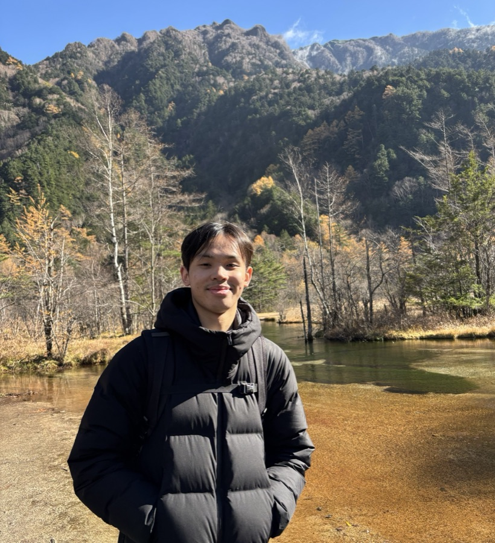

@inproceedings{ishitoya2026clap,
title = {{CLAP}: Direct {VLM}-to-{VLA} Adaptation via Language-Action Grounding},
author = {Ishitoya, Yuri and Siburian, Jeremy and Hamaya, Masashi and Saito, Kuniaki and Beltran-Hernandez, Cristian C. and Nishimura, Mai},
booktitle = {Conference on Robot Learning (CoRL)},
year = {2026}
}
@inproceedings{siburian2026vilain,
title = {Grounded Vision-Language Interpreter for Long-Horizon Bimanual Task and Motion Planning},
author = {Siburian, Jeremy and Shirai, Keisuke and Beltran-Hernandez, Cristian C. and Hamaya, Masashi and G{\"o}rner, Michael and Hashimoto, Atsushi},
booktitle = {IEEE/RSJ International Conference on Intelligent Robots and Systems (IROS)},
year = {2026}
}
@inproceedings{siburian2026phase,
title = {{PHASE}: Compliance-Enabled Tactile Phase Retrieval for Few-Shot Insertion Learning},
author = {Siburian, Jeremy and Beltran-Hernandez, Cristian C. and Matsushima, Tatsuya and Iwasawa, Yusuke and Hamaya, Masashi and Nishimura, Mai},
booktitle = {IEEE/RSJ International Conference on Intelligent Robots and Systems (IROS)},
year = {2026}
}
@inproceedings{chan2026online,
title = {Online Robot Manipulation Error Detection and Description},
author = {Chan, Yung-Shun and Saito, Kuniaki and Beltran-Hernandez, Cristian Camilo and Siburian, Jeremy and Hamaya, Masashi and Lee, Chun-Yi},
booktitle = {Conference on Robot Learning (CoRL)},
year = {2026}
}
@article{kamijo2026tactile,
title = {Tactile Memory with Soft Robot: Robust Object Insertion via Masked Encoding and Soft Wrist},
author = {Kamijo, Tatsuya and Nishimura, Mai and Shibasaki, Nodoka and Siburian, Jeremy and Beltran-Hernandez, Cristian C. and Hamaya, Masashi},
journal = {IEEE Robotics and Automation Letters},
volume = {11},
number = {7},
pages = {7844--7851},
year = {2026},
doi = {10.1109/LRA.2026.3692097}
}
@inproceedings{siburian2025practical,
title = {Practical Task and Motion Planning for Robotic Food Preparation},
author = {Siburian, Jeremy and Beltran-Hernandez, Cristian C. and Hamaya, Masashi},
booktitle = {IEEE/SICE International Symposium on System Integration (SII)},
pages = {1229--1234},
year = {2025},
doi = {10.1109/SII59315.2025.10870896}
}